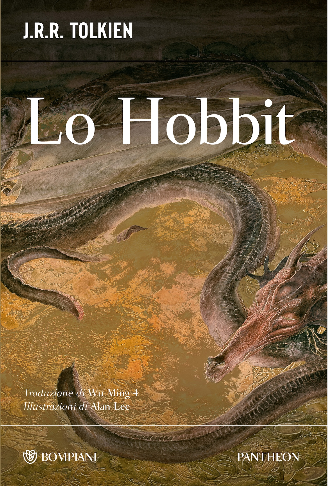

3:12 · 2 OPERE
La dimensione naturale.
Il filo del discorso
Il parlante contrappone la bellezza dei paesaggi naturali alle possibilità offerte dalla città, anche quando questa dispone di molte comodità. Richiama Lo Hobbit e Il Signore degli Anelli per suggerire che il fascino delle ambientazioni di Tolkien dipenda anche dal rapporto con scenari di questo tipo. La scarsa presenza umana gli appare favorevole a un diverso incontro con se stessi e a un ritorno alla realtà. La conclusione critica il rifiuto moderno della natura e propone, in forma provocatoria, un suo maggiore spazio nella vita quotidiana.
I libri nel discorso

Lo Hobbit
Note sul riferimento
Copertina: Bompiani, Pantheon, 2026; traduzione Wu Ming 4, illustrazioni Alan Lee
Copertina dell’edizione Bompiani di Lo Hobbit illustrata da Alan Lee. Edizione scelta come riferimento iconografico; nessuna edizione è confermata nel video.
Tolkien viene nominato a 54,50 secondi; a 68,62 secondi il parlante richiama Lo Hobbit e Il Signore degli Anelli come esempi di ambientazioni naturali.

Il Signore degli Anelli
Note sul riferimento
Copertina: Bompiani, 2020 · edizione illustrata da Alan Lee
Edizione illustrata da Alan Lee, traduzione di Ottavio Fatica. Nessuna edizione attribuita al video.
Tolkien viene nominato a 54,50 secondi; a 68,62 secondi il parlante richiama Lo Hobbit e Il Signore degli Anelli come esempi di ambientazioni naturali.